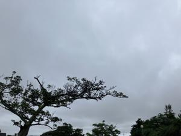
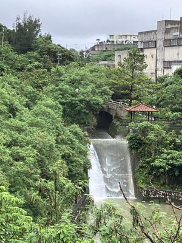
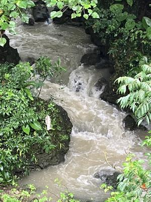

うるがいの話 ある日
最新: カチャーシー【うるがいの話 ある日】とは 一日だけのプログです
『うるがいの話』の最新一日だけのプログで、通信料が少なく経済的だ。カニの画像をクリックすると全ての日付が載る『うるがいの話』サイトを表示します
|
|
【うるがいの話】 うるがい(ｳﾙｶﾞｲ urugai)とは、『もずくがに』の名前でとても大きくなります。 |
|---|---|
|
|
【カミマヤーの話】 猫のことを方言でマヤーといいます。カミマヤー（kamimayaa）とは、神の猫のことです。 |
|
【たながぁの音楽】 たながぁ（ﾀﾅｶﾞｰ tanagaa）とは手長えびのことで、何種類かあり大きいのは車 エビぐらいになります。 |

|
【ぶながぁの話】 ぶながぁ(ﾌﾞﾅｶﾞｰ bunagaa)とは、赤い髪の毛、赤い身体、そして身長は１ｍ２０ｃｍ ぐらい、川の蟹を食べているの目撃された。場所は沖縄県国頭郡大宜味村のと ある村僕の隣近所に住んでいる爺さんから、聞いた話です。 |
|
|
【ギーマの話】 ギーマ(giima)とは、山原の里山に咲くスズランに似た、 花を付けます。実は食べられます、 気が付くと口の周りが紫になっています。 |
2024年06月19日 (水）カチャーシー
16:53
  
カチャーシーは、テンポの速い沖縄民謡の演奏に合わせて踊られる、両手を
頭上に挙げ、手首を回しながら左右に振る踊り。多くは演奏会や宴席のクラ
イマックスとして踊られる。沖縄方言の訛で「かき回し」という意味であり
、頭上で手を左右に振るさまが、かき回すように見えるため呼び名がついた
。 ウィキペディア（Wikipedia）より
島太鼓の第２段目として、唐船（とーしん）ドーイを考えた。ところで、こ
の曲が、カチャーシーの曲であることを初めて知った。ヨメに言うと信じら
れない、常識と言われた。そう、私は世間知らずなのだ。島太鼓のリズムの
前にそもそもの三線の曲を作らないといけない。ところがだ、似て非なる工
工四が沢山あって困ってしまった（二日間も悩む）。
たどり着いたのは『知名定男が歌う唐船どーい（沖縄県民謡）』を元に、ピ
アノソロというピアノ楽譜と工工四が載っているユーチューブ動画を参考に
することにする。イントロから２番目の初めまで、動画を参考に楽譜データ
を作成。知名定男の動画より、オーディオを抽出、そして楽譜ソフトで演奏
テンポを近い値にし、楽譜ソフトのオーディオ（ＭＰ３）を抽出。そして二
つのオーディオ（ＭＰ３）を、オーディオ編集ソフトで知名定男の動画版（
人が演奏するので、ビートが微妙に違うのである）のオーディオを編集（ほ
とんど、カットだが）し、同時に演奏するとアラマ！、一致する。
おそるべし、ピアノソロの人の耳コピー能力！、凄い人がいるもんだと感嘆
した。６月末までに、ユーチューブ動画の作成を終えることが目標である。
１６時４８分 ビットコインの総資産 ￥２９、９３５（↓１４５）